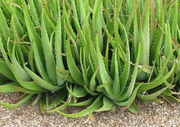
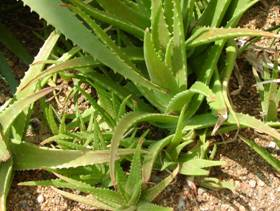
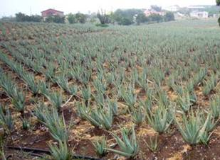

HORT 282 :: Lecture 26 :: ALOE VERA

Aloe species, perennial succulents belonging to the family Liaceae, are the source of the drug aloe. Of the 275 species, there are three commercially important species which are the main sources of the drug. They are: A. barbadensis, Mill. (2n = 14), (A. vera Linn) which yields Curacao aloe or Indian aloe or Jaffarabad aloe or Barbados aloe, which is produced in the West Indies (Curacao, Aruba, Bonaire) and A. ferox and its hybrids which yield Cape aloe, produced in South Africa and A. perryi which yields the socotrine aloe. Other aloe species (A. africana and A. spicata) yield aloes of lesser importance.
Aloe is obtained by cutting the leaves at their base and letting the yellow, bitter juice drain out. The water is evaporated off from the juice by heat, and the resulting light to dark-brown mass is the drug aloe. Of the two major products derived from the leaves, the yellow, bitter juice present in specialized cells beneath the thick epidermis yields the drug aloe and the parenchymatous tissue in the centre of the leaf contains a mucilaginous gel which yields aloe gel or aloe vera gel; it is currently obtained from A. barbadensis.
Aloe contains cathartic anthraglycosides as its active principles; these are mostly C-glucosides, notably barbaloin, which is a glucoside of aloe emodin. The concentrations of these glucosides vary with the types of aloe ranging from 4.5 to 25% of aloin. Other constituents present include aloesin and its aglycone aloesone (a chromone), free anthraquinones (e.g. aloe-emodin) and resins.
Aloe vera gel contains a glucomannan which is a polysaccharide similar to guar and locust bean-gums and is believed to be the active constituent. Other constituents reported, or otherwise claimed to be present, include other polysaccharides (containing galactose, xylose and arabinose), steroids, organic acids, enzymes, antibiotic principles, amino acids, biogenic stimulators, wound-healing hormones, saponins, minerals, and so forth.
Fresh aloe gel is well known for its domestic medicinal value. For this reason, Aloe vera is also called burn, first-aid or medicine plant. When freshly obtained, the gel has the property of relieving thermal burns and sunburn, as well as promoting wound healing; it also has moisturizing and emollient properties. The plant is used as a home remedy for these purposes. The only officially recognized use of aloe is its beneficial effect on the skin.
Aloe and aloin are extensively used as active ingredients in laxative preparations, often with other cathartics such as buckthorn, cascara and senna; belladonna extracts are often included to lessen griping. Aloin is also used in anti-obesity preparations. Aloe gel and sometimes the drug aloe are used as moisturizer, emollient or wound-healer in various cosmetic and pharmaceutical formulations. Extracts of aloe or aloin are used in sunscreens, X-ray / burns, dermatitis, cutaneous leishmaniasis and other cosmetic preparations. As a food, aloe extracts are used as a flavouring ingredient primarily in alcoholic and nonalcoholic beverages and in candy to impart a bitter note.
Origin and Distribution
Plants of the genus Aloebelong to the old world and are indigenous to Eastern and Southern Africa, the Canary Islands and Spain. The species spread to the Mediterranean basin and reached the West Indies, India, China and other countries in the 16th century; and certain species are now cultivated for commercial purposes, especially in some of the West Indian islands of the north coast of South America. It is also cultivated throughout India.
Description of the Plant
Species and Varieties
Soil
Aloe is a hardy plant and grows on a variety of soils. It does well in the sandy coastal to loamy soils of the plains with a pH of up to 8.5. However, water-logged conditions and problematic soils do not suit its cultivation.
Climate
Aloeis usually cultivated between March and June. The plant has a wide adaptability and can be seen growing throughout the length and breadth of the country. It is found growing in warm, humid or dry climate with even 150-200 cm to about 35-40 cm of yearly rainfall during the growing period. However, in dry regions, the crop should be provided with protective irrigation.
Land Preparation
Before cultivation, the land should be ploughed twice and the field should be cleaned thoroughly of weeds. If required, small canals may be prepared for drainage. About 25 t/ha of cow dung manure is also added.
Cultivation
Propagation
The plants are generally propagated by root-suckers or rhizome cuttings.

Planting
The plants are planted at a spacing of 60 x 30 cm or 60 x 45 cm. About 15-18 cm-long root-suckers or rhizome-cuttings are planted in such a way that two-thirds portion of the root-sucker or rhizome cutting should be under the ground.

Manuring
It is a newly domesticated crop and its full production technology including manurial requirement is yet to be worked out. An ad hoc basis application of a mixture of 150 kg/ha of nitrogen (N), potassium (K) and phosphorus (P) is recommended. The fertilizers are applied in the soil near the root-system, after the plants are established. 30 kg of N and 120kg gypsum is recommended for Tamil Nadu.
Irrigation
Soon after planting, the land should be irrigated. During the crop period, irrigation must be provided according to the moisture content of the soil. Generally, 4 to 5 irrigations per year are sufficient. However, water should not be allowed to stagnate near the plant.
Weeding
Weeding may be done twice a year and the land should be kept weed-free.
Pests and Diseases
Normally, the plant is not affected by any pests or diseases of a serious nature. But recently, the leaf-spot disease caused by Altarnaria alternata and Fusarium solani has been reported from India.
Harvesting and Yield
The plants are harvested' eight months after planting. While harvesting, the plants can be removed manually or with the help of a tractor-drawn disc harrow or cultivator. The broken rhizome part left in the soil throws out new sprouts in spring for raising the succeeding crop. An aloe plantation gives a commercial yield from the second year up to the age of five years, after which it needs replanting.
The yield of the crop on a fresh-weight basis will be around 10,000-12,000 kg/ha.
- Aloe vera belongs to the family ____________
- Edible wax coating of fruits is obtained from _____________
- Propagule of Aloe vera is ____________
- Active principle of Aloe vera?
- Aloin having ------------properties
| Download this lecture as PDF here |